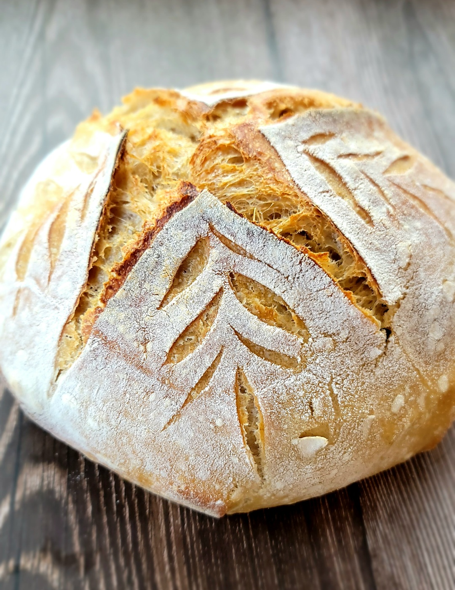

Home
Sourdough Bread

Beginner Sourdough Bread Recipe
If you love fresh sourdough bread with a golden, crisp crust and a light, airy crumb, this recipe is for you. It's one of the simplest homemade sourdough bread recipes, and one of the best, too.
Ingredients
- 50-100 g bubbly, active sourdough starter
- 375 g warm water
- 500 g warm water
- 9-12 g fine sea salt
Instructions
- Make the dough: Whisk the starter and water together in a large bowl with a fork or spatula. Add the flour and salt. Mix to combine, finishing by hand if necessary to form a rough dough. Cover with a damp towel and let rest for 30 minutes.
- Stretch and fold: After 30 minutes, grab a corner of the dough and pull it up and into the center. Repeat until you've performed this series of folds 4 to 5 times with the dough. Let dough rest for another 30 minutes and repeat the stretching and folding action. If you have the time: do this twice more for a total of 4 times in 2 hours.
- Bulk Fermentation (first rise): Cover the bowl with a towel and let rise at room temperature, about 8 to 10 hours at 70°F (21°C) or even less if you live in a warm environment. The dough is ready when it has increased by 50% in volume, has a few bubbles on the surface, and jiggles when you move the bowl from side to side.
- Shape: Coax the dough onto a lightly floured surface. Gently shape it into a round: fold the top down to the center, turn the dough, fold the top down to the center, turn the dough; repeat until you've come full circle. If you have a bench scraper, use it to push and pull the dough to create tension.
- Rest: Let the dough rest seam side up rest for 30 minutes. Meanwhile, line an 8-inch bowl or proofing basket with a towel and dust with flour. Using a bench scraper or your hands, shape it again as described in step 4. Place the round into your lined bowl, seam side up.
- Proof (second rise): Cover the dough and refrigerate for 1 hour or for as long as 48 hours.
- Place a Dutch oven in your oven, and preheat your oven to 550°F (290°C). Cut a piece of parchment to fit the size of your baking pot.
- Score: Place the parchment over the dough and invert the bowl to release. Using the tip of a small knife or a razor blade, score the dough however you wish — a simple “X” is nice. Use the parchment to carefully transfer the dough into the preheated baking pot.
- Bake: Lower the oven to temperature to 450ºF (230ºC). Carefully cover the pot. Bake the dough for 30 minutes, covered. Remove the lid, lower the temperature to 400ºF (200ºC) and continue to bake for 10 - 15 minutes more. If necessary, lift the loaf out of the pot, and bake directly on the oven rack for the last 5 to 10 minutes. Cool on a wire rack for 1 hour before slicing.